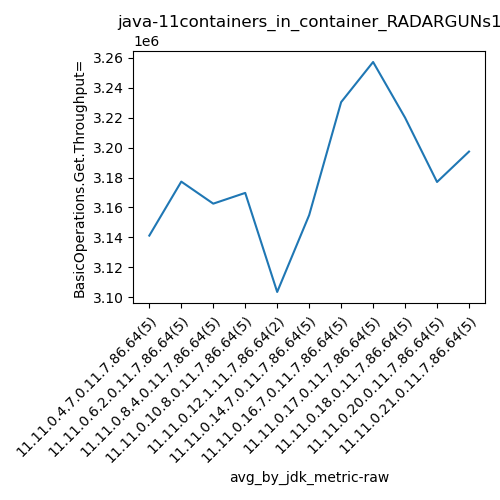
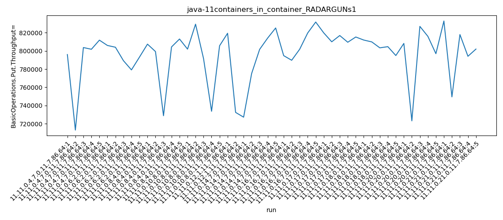
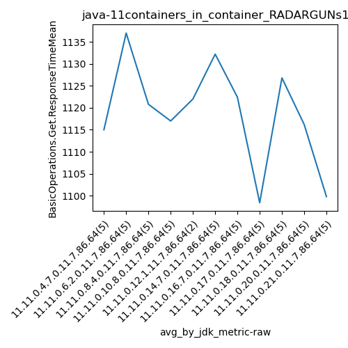
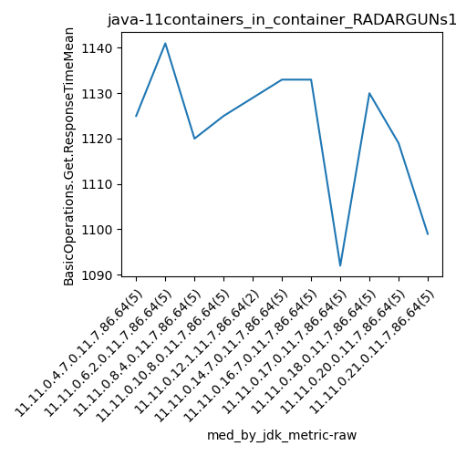
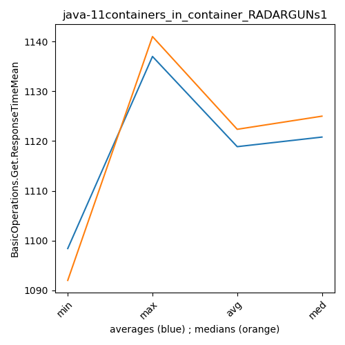

java-11 RADARGUNs1
Context at bottom
/home/jvanek/git/benchmarks-in-nested-virtualisation-toolchain/final_results/containers_in_container_results/containers_in_container_DACAPO
java-11
RADARGUNs1
/home/jvanek/git/benchmarks-in-nested-virtualisation-toolchain/final_results/containers_in_container_results/containers_in_container_JMH
java-11
RADARGUNs1
/home/jvanek/git/benchmarks-in-nested-virtualisation-toolchain/final_results/containers_in_container_results/containers_in_container_SPECJBB
java-11
RADARGUNs1
/home/jvanek/git/benchmarks-in-nested-virtualisation-toolchain/final_results/containers_in_container_results/containers_in_container_RADARGUNs1
java-11
RADARGUNs1
containers_in_container_RADARGUNs1
- containers_in_container_RADARGUNs1 - throughput get
- containers_in_container_RADARGUNs1 - throughput put
- containers_in_container_RADARGUNs1 - response mean time get
- containers_in_container_RADARGUNs1 - response mean time put
containers_in_container_RADARGUNs1 - throughput get
Expected number of java-11 JDKs: 11
1st avgmed_alljdks_metric:
/home/jvanek/git/benchmarks-in-nested-virtualisation-toolchain/final_results/result_processing.py /home/jvanek/git/benchmarks-in-nested-virtualisation-toolchain/final_results/containers_in_container_results/containers_in_container_RADARGUNs1 BasicOperations.Get.Throughput= False
values: [3183969, 2852640, 3214662, 3207178, 3247350, 3223885, 3216167, 3156736, 3116832, 3172644, 3229827, 3197191, 2915625, 3217408, 3252514, 3207727, 3317437, 3166074, 2934610, 3222655, 3277257, 2929698, 2909227, 3100603, 3207030, 3256702, 3300745, 3179260, 3159102, 3208048, 3278921, 3326624, 3279174, 3240240, 3267410, 3238363, 3260889, 3247776, 3239829, 3213483, 3219025, 3179818, 3232847, 2892854, 3307925, 3263669, 3187771, 3331409, 2998175, 3272093, 3176632, 3208348]

Expected number of iterations: 5
final number of values: 52 out of 55
Pass rate: 94.5%
values: (2852640, 3331409, 3185463.0384615385, 3216167)

** accuracy from all jdks and runs
more is better
MIN: 2852640
MAX: 3331409
AVG: 3185463.0384615385
MED: 3216167
Relative differences 1:
MIN-MAX: 14.0 %
MIN-AVG: 10.0 %
MIN-MED: 11.0 %
MAX-MIN: -17.0 %
MAX-AVG: -5.0 %
MAX-MED: -4.0 %
AVG-MED: 1.0 %
stored to java-11.properties. sort | uniq that!
2nd avgmed_by_jdk_metric:
values: [3141159.8, 3177252.8, 3162513.0, 3169700.6, 3103477.5, 3154861.4, 3230391.0, 3257215.2, 3219986.2, 3177013.2, 3197331.4]

values: [3207178, 3172644, 3217408, 3207727, 3277257, 3207030, 3208048, 3260889, 3219025, 3232847, 3208348]

values: (3103477.5, 3257215.2, 3180991.1, 3177013.2)
values: (3172644, 3277257, 3219854.6363636362, 3208348)

** accuracy from all jdks where runs were avged
more is better
MIN: 3103477.5
MAX: 3257215.2
AVG: 3180991.1
MED: 3177013.2
Relative differences 1:
MIN-MAX: 5.0 %
MIN-AVG: 2.0 %
MIN-MED: 2.0 %
MAX-MIN: -5.0 %
MAX-AVG: -2.0 %
MAX-MED: -3.0 %
AVG-MED: -0.0 %
stored to java-11.properties. sort | uniq that!
** accuracy from all jdks where runs were medianed
more is better
MIN: 3172644
MAX: 3277257
AVG: 3219854.6363636362
MED: 3208348
Relative differences 1:
MIN-MAX: 3.0 %
MIN-AVG: 1.0 %
MIN-MED: 1.0 %
MAX-MIN: -3.0 %
MAX-AVG: -2.0 %
MAX-MED: -2.0 %
AVG-MED: -0.0 %
stored to java-11.properties. sort | uniq that!
containers_in_container_RADARGUNs1 - throughput put
Expected number of java-11 JDKs: 11
1st avgmed_alljdks_metric:
/home/jvanek/git/benchmarks-in-nested-virtualisation-toolchain/final_results/result_processing.py /home/jvanek/git/benchmarks-in-nested-virtualisation-toolchain/final_results/containers_in_container_results/containers_in_container_RADARGUNs1 BasicOperations.Put.Throughput= False
values: [796061, 713058, 803713, 801815, 811830, 805999, 804051, 789278, 779163, 793193, 807447, 799303, 728824, 804359, 813078, 801977, 829378, 791504, 733722, 805688, 819387, 732473, 727240, 775157, 801711, 814113, 825205, 794825, 789733, 801889, 819725, 831721, 819828, 810014, 816906, 809532, 815289, 811931, 809896, 803393, 804679, 794934, 808232, 723201, 826954, 815994, 796963, 832862, 749535, 817987, 794114, 802021]

Expected number of iterations: 5
final number of values: 52 out of 55
Pass rate: 94.5%
values: (713058, 832862, 796363.1730769231, 804051)

** accuracy from all jdks and runs
more is better
MIN: 713058
MAX: 832862
AVG: 796363.1730769231
MED: 804051
Relative differences 1:
MIN-MAX: 14.0 %
MIN-AVG: 10.0 %
MIN-MED: 11.0 %
MAX-MIN: -17.0 %
MAX-AVG: -5.0 %
MAX-MED: -4.0 %
AVG-MED: 1.0 %
stored to java-11.properties. sort | uniq that!
2nd avgmed_by_jdk_metric:
values: [785295.4, 794336.8, 790602.2, 792453.8, 775930.0, 788685.2, 807578.6, 814313.8, 804966.6, 794268.8, 799303.8]

values: [801815, 793193, 804359, 801977, 819387, 801711, 801889, 815289, 804679, 808232, 802021]

values: (775930.0, 814313.8, 795248.6363636364, 794268.8)
values: (793193, 819387, 804959.2727272727, 802021)

** accuracy from all jdks where runs were avged
more is better
MIN: 775930.0
MAX: 814313.8
AVG: 795248.6363636364
MED: 794268.8
Relative differences 1:
MIN-MAX: 5.0 %
MIN-AVG: 2.0 %
MIN-MED: 2.0 %
MAX-MIN: -5.0 %
MAX-AVG: -2.0 %
MAX-MED: -3.0 %
AVG-MED: -0.0 %
stored to java-11.properties. sort | uniq that!
** accuracy from all jdks where runs were medianed
more is better
MIN: 793193
MAX: 819387
AVG: 804959.2727272727
MED: 802021
Relative differences 1:
MIN-MAX: 3.0 %
MIN-AVG: 1.0 %
MIN-MED: 1.0 %
MAX-MIN: -3.0 %
MAX-AVG: -2.0 %
MAX-MED: -2.0 %
AVG-MED: -0.0 %
stored to java-11.properties. sort | uniq that!
containers_in_container_RADARGUNs1 - response mean time get
Expected number of java-11 JDKs: 11
1st avgmed_alljdks_metric:
/home/jvanek/git/benchmarks-in-nested-virtualisation-toolchain/final_results/result_processing.py /home/jvanek/git/benchmarks-in-nested-virtualisation-toolchain/final_results/containers_in_container_results/containers_in_container_RADARGUNs1 BasicOperations.Get.ResponseTimeMean True
values: [1125, 1141, 1160, 1079, 1070, 1141, 1100, 1165, 1142, 1137, 1134, 1131, 1110, 1120, 1109, 1137, 1070, 1151, 1102, 1125, 1129, 1115, 1139, 1194, 1133, 1127, 1068, 1133, 1145, 1119, 1139, 1076, 1089, 1105, 1092, 1114, 1092, 1111, 1130, 1109, 1131, 1153, 1119, 1123, 1092, 1108, 1139, 1099, 1085, 1073, 1111, 1131]

Expected number of iterations: 5
final number of values: 52 out of 55
Pass rate: 94.5%
values: (1068, 1194, 1118.6923076923076, 1123)

** accuracy from all jdks and runs
more is worse
MIN: 1194
MAX: 1068
AVG: 1118.6923076923076
MED: 1123
Relative differences 1:
MIN-MAX: 12.0 %
MIN-AVG: 7.0 %
MIN-MED: 6.0 %
MAX-MIN: -11.0 %
MAX-AVG: -5.0 %
MAX-MED: -5.0 %
AVG-MED: -0.0 %
stored to java-11.properties. sort | uniq that!
2nd avgmed_by_jdk_metric:
values: [1115.0, 1137.0, 1120.8, 1117.0, 1122.0, 1132.2, 1122.4, 1098.4, 1126.8, 1116.2, 1099.8]

values: [1125, 1141, 1120, 1125, 1129, 1133, 1133, 1092, 1130, 1119, 1099]

values: (1098.4, 1137.0, 1118.8727272727274, 1120.8)
values: (1092, 1141, 1122.3636363636363, 1125)

** accuracy from all jdks where runs were avged
more is worse
MIN: 1137.0
MAX: 1098.4
AVG: 1118.8727272727274
MED: 1120.8
Relative differences 1:
MIN-MAX: 4.0 %
MIN-AVG: 2.0 %
MIN-MED: 1.0 %
MAX-MIN: -3.0 %
MAX-AVG: -2.0 %
MAX-MED: -2.0 %
AVG-MED: -0.0 %
stored to java-11.properties. sort | uniq that!
** accuracy from all jdks where runs were medianed
more is worse
MIN: 1141
MAX: 1092
AVG: 1122.3636363636363
MED: 1125
Relative differences 1:
MIN-MAX: 4.0 %
MIN-AVG: 2.0 %
MIN-MED: 1.0 %
MAX-MIN: -4.0 %
MAX-AVG: -3.0 %
MAX-MED: -3.0 %
AVG-MED: -0.0 %
stored to java-11.properties. sort | uniq that!
containers_in_container_RADARGUNs1 - response mean time put
Expected number of java-11 JDKs: 11
1st avgmed_alljdks_metric:
/home/jvanek/git/benchmarks-in-nested-virtualisation-toolchain/final_results/result_processing.py /home/jvanek/git/benchmarks-in-nested-virtualisation-toolchain/final_results/containers_in_container_results/containers_in_container_RADARGUNs1 BasicOperations.Put.ResponseTimeMean True
values: [4180, 4244, 3945, 4064, 3940, 4064, 4139, 4188, 4061, 4100, 3925, 4116, 4028, 3956, 4059, 4022, 3868, 3936, 4000, 3998, 3979, 3878, 3947, 4121, 3999, 3894, 3927, 4030, 4098, 4175, 3969, 3933, 3908, 4032, 3921, 3925, 3865, 3904, 3905, 3858, 4051, 4001, 3960, 4010, 3912, 4068, 4040, 3858, 3837, 3908, 4012, 3983]

Expected number of iterations: 5
final number of values: 52 out of 55
Pass rate: 94.5%
values: (3837, 4244, 3995.019230769231, 3998)

** accuracy from all jdks and runs
more is worse
MIN: 4244
MAX: 3837
AVG: 3995.019230769231
MED: 3998
Relative differences 1:
MIN-MAX: 11.0 %
MIN-AVG: 6.0 %
MIN-MED: 6.0 %
MAX-MIN: -10.0 %
MAX-AVG: -4.0 %
MAX-MED: -4.0 %
AVG-MED: -0.0 %
stored to java-11.properties. sort | uniq that!
2nd avgmed_by_jdk_metric:
values: [4074.6, 4110.4, 4016.8, 3964.8, 3928.5, 3977.6, 4041.0, 3930.2, 3943.8, 3998.0, 3919.6]

values: [4064, 4100, 4028, 3998, 3979, 3947, 4030, 3921, 3905, 4010, 3908]

values: (3919.6, 4110.4, 3991.390909090909, 3977.6)
values: (3905, 4100, 3990.0, 3998)

** accuracy from all jdks where runs were avged
more is worse
MIN: 4110.4
MAX: 3919.6
AVG: 3991.390909090909
MED: 3977.6
Relative differences 1:
MIN-MAX: 5.0 %
MIN-AVG: 3.0 %
MIN-MED: 3.0 %
MAX-MIN: -5.0 %
MAX-AVG: -2.0 %
MAX-MED: -1.0 %
AVG-MED: 0.0 %
stored to java-11.properties. sort | uniq that!
** accuracy from all jdks where runs were medianed
more is worse
MIN: 4100
MAX: 3905
AVG: 3990.0
MED: 3998
Relative differences 1:
MIN-MAX: 5.0 %
MIN-AVG: 3.0 %
MIN-MED: 3.0 %
MAX-MIN: -5.0 %
MAX-AVG: -2.0 %
MAX-MED: -2.0 %
AVG-MED: -0.0 %
stored to java-11.properties. sort | uniq that!
/home/jvanek/git/benchmarks-in-nested-virtualisation-toolchain/final_results/containers_in_container_results/containers_in_container_J2DBENCH
java-11
RADARGUNs1
/home/jvanek/git/benchmarks-in-nested-virtualisation-toolchain/final_results/containers_in_container_results/containers_in_container_RADARGUNs3
java-11
RADARGUNs1
pass rates:
containers_in_container_RADARGUNs1=94.5%
Context:
- containers_in_container_results
- RADARGUNs1